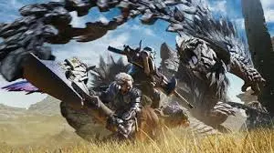

- Overview: *Monster Hunter: Wilds* is an action-RPG set in a vast, open world where players take on the role of a hunter tasked with tracking and slaying gigantic monsters. This entry in the *Monster Hunter* series introduces a new, untamed environment filled with dynamic ecosystems, diverse habitats, and creatures that interact with the environment and each other. The game focuses on exploration, environmental storytelling, and large-scale monster battles, with a variety of hunting weapons, tactics, and multiplayer modes.
- Developer: Capcom
- Publisher: Capcom
- Studio: Capcom
- Platform: PlayStation 5, Xbox Series X/S, PC (Steam)
- Release Date: TBA (still in development, no official release date yet)
- Average Price: Likely around $59.99 (Price may vary depending on the platform and region)
- Ratings:
- Metacritic: Pending (due to the game being in development)
- Steam: Pending (awaiting early access or demo release)
- Important Features:
- Expansive open-world environments where players can freely explore, track monsters, and uncover hidden resources.
- Dynamic ecosystems where monsters and wildlife interact naturally, creating unique hunting opportunities.
- Real-time weather and environmental effects, such as storms, night cycles, and terrain shifts, which impact monster behavior and the player's strategies.
- New and returning weapons, including upgrades to existing favorites and innovative new gear designed for the wild environments.
- In-depth crafting and progression systems that allow players to customize their hunter's abilities, gear, and playstyle.
- Multiplayer mode for cooperative monster hunts, allowing teams of hunters to tackle more challenging creatures together.
- Criticisms:
- The open-world design may feel less focused compared to previous *Monster Hunter* games, potentially losing the tight, structured progression the series is known for.
- Early demos have suggested that the pacing could be slower, especially for new players who may struggle with the complexity of exploration and monster tracking.
- The large, dynamic world may lead to occasional performance issues, especially on older hardware or in densely populated areas.
- User Reviews: Initial reactions have been mixed, with many praising the open-world concept, but others expressing concern about how the new exploration and monster interactions will mesh with the traditional *Monster Hunter* formula. Early access testers have noted the game's impressive visual fidelity and the potential for exciting new mechanics, though the complexity of the world might overwhelm newcomers.
- Sequel/Expansion: *Monster Hunter: Wilds* is a fresh entry in the series, and although no sequels have been announced yet, Capcom has hinted at ongoing expansions and new monster additions post-launch.
- Genre: Action-RPG, Open-World, Cooperative Multiplayer
- Recommended for: Fans of the *Monster Hunter* series who are looking for a fresh, more expansive take on the hunting experience, especially those who enjoy open-world exploration and dynamic environments. Also suitable for players who enjoy challenging monster battles and working in cooperative teams.